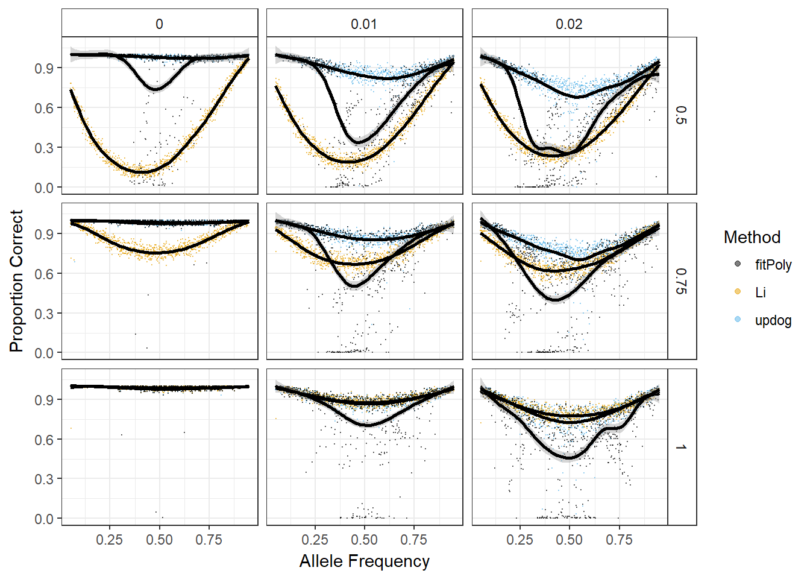
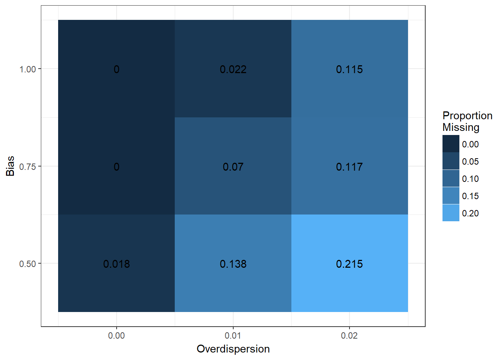
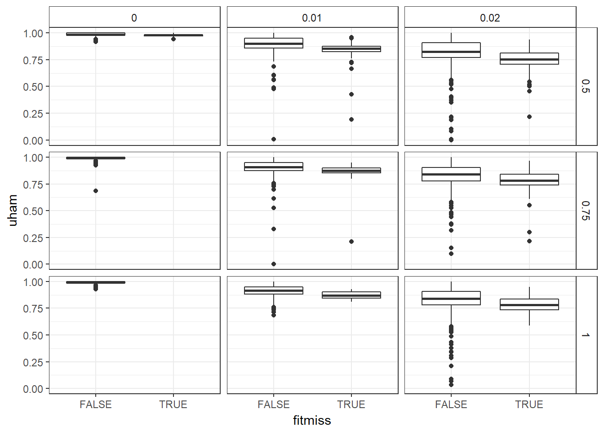
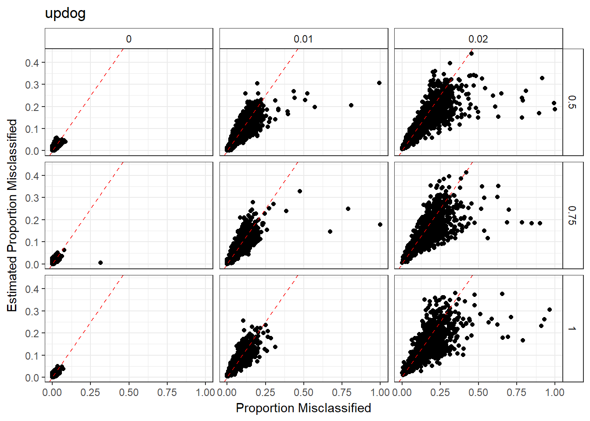
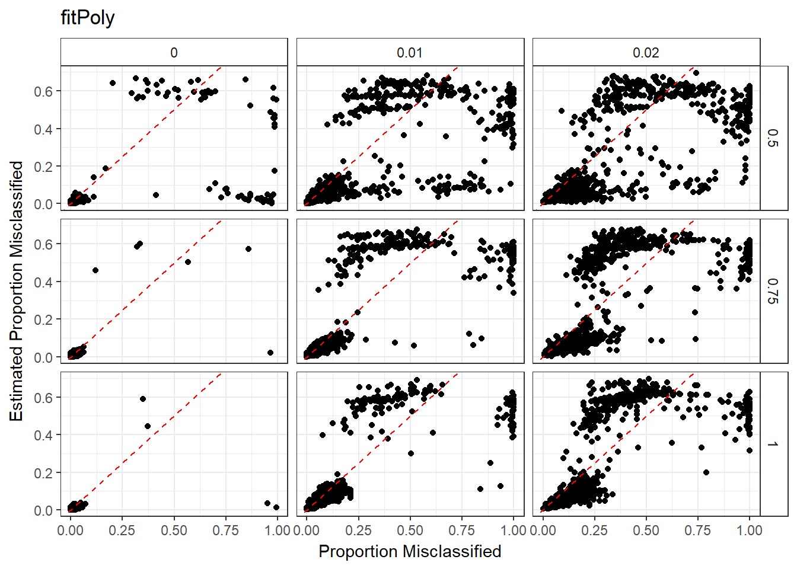
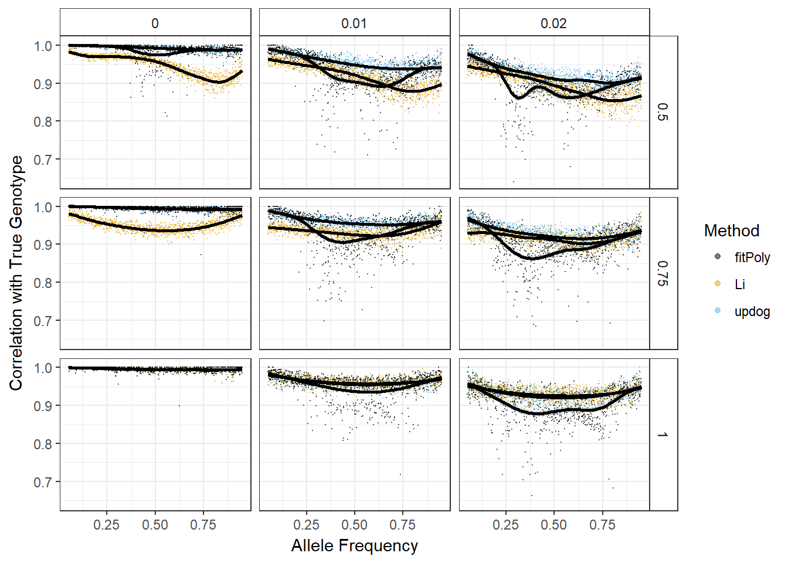
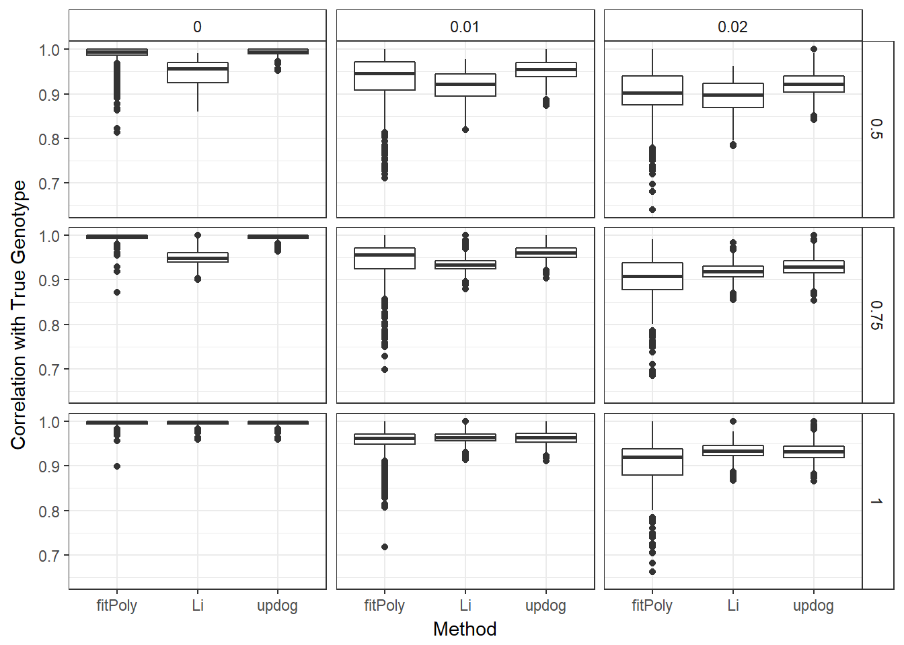

I play around with the results of the fitPoly sims.
library(tidyverse)
dat <- as_data_frame(read.csv("../../../reproduce_genotyping/Output/sims_out/sims_out.csv", row.names = NULL))fitPoly has a lot more outlier datasets:
longdat <- dat %>% transmute(updog = uham, Li = bham, fitPoly = fpham,
allele_freq = allele_freq, od_param = od_param,
bias_val = bias_val) %>%
gather(key = "Method", value = "PropCorrect", updog:fitPoly)
pl <- ggplot(data = longdat, mapping = aes(y = PropCorrect,
x = allele_freq,
color = Method,
group = Method)) +
facet_grid(bias_val ~ od_param) +
theme_bw() +
theme(strip.background = element_rect(fill = "white")) +
xlab("Allele Frequency") +
ylab("Proportion Correct") +
geom_point(size = 0.1, alpha = 1/2) +
geom_smooth(color = "black") +
guides(colour = guide_legend(override.aes = list(size=1.5))) +
ggthemes::scale_color_colorblind()
print(pl)## `geom_smooth()` using method = 'gam'## Warning: Removed 695 rows containing non-finite values (stat_smooth).## Warning: Removed 695 rows containing missing values (geom_point).
fitPoly had a lot of datasets where it wouldn’t return anything due to their filtering criteria.
dat %>% group_by(od_param, bias_val) %>%
summarize(num_na = mean(is.na(fpham))) %>%
ggplot(mapping = aes(x = od_param,
y = bias_val,
fill = num_na,
label = num_na)) +
geom_tile() +
geom_text() +
theme_bw() +
scale_y_continuous(breaks = unique(dat$bias_val)) +
scale_x_continuous(breaks = unique(dat$od_param)) +
xlab("Overdispersion") +
ylab("Bias") +
guides(fill = guide_legend(title = "Proportion\nMissing")) ->
pl
print(pl)
Updog only does slightly worse on the datasets that fitPoly deems are unrecoverable.
dat %>%
mutate(fitmiss = is.na(fpham)) %>%
ggplot(mapping = aes(x = fitmiss, y = uham)) +
geom_boxplot() +
facet_grid(bias_val ~ od_param) +
theme_bw() +
theme(strip.background = element_rect(fill = "white"))
Updog’s estimated proportion misclassified is somewhat close to being unbiased. But there is a large variance. And some points that are highly misclassified only have a moderate estimate of being misclassified.
dat %>%
ggplot(mapping = aes(x = 1 - uham, y = uepm)) +
geom_point() +
facet_grid(bias_val ~ od_param) +
theme_bw() +
theme(strip.background = element_rect(fill = "white")) +
xlab("Proportion Misclassified") +
ylab("Estimated Proportion Misclassified") +
geom_abline(color = "red", lty = 2) +
ggtitle("updog") ->
pl
print(pl)
fitPoly’s estimates look much worse.
dat %>%
ggplot(mapping = aes(x = 1 - fpham, y = fpepm)) +
geom_point() +
facet_grid(bias_val ~ od_param) +
theme_bw() +
theme(strip.background = element_rect(fill = "white")) +
xlab("Proportion Misclassified") +
ylab("Estimated Proportion Misclassified") +
geom_abline(color = "red", lty = 2) +
ggtitle("fitPoly") ->
pl
print(pl)## Warning: Removed 695 rows containing missing values (geom_point).
fitPoly has some poor behavior in the correlation metric.
longdat <- dat %>% transmute(updog = ucor, Li = bcor, fitPoly = fpcor,
allele_freq = allele_freq, od_param = od_param,
bias_val = bias_val) %>%
gather(key = "Method", value = "Cor", updog, Li, fitPoly)
pl <- ggplot(data = longdat, mapping = aes(y = Cor,
x = allele_freq,
color = Method,
group = Method)) +
facet_grid(bias_val ~ od_param) +
theme_bw() +
theme(strip.background = element_rect(fill = "white")) +
xlab("Allele Frequency") +
ylab("Correlation with True Genotype") +
geom_point(size = 0.1, alpha = 1/2) +
geom_smooth(color = "black") +
guides(colour = guide_legend(override.aes = list(size=1.5))) +
ggthemes::scale_color_colorblind()
print(pl)## `geom_smooth()` using method = 'gam'## Warning: Removed 706 rows containing non-finite values (stat_smooth).## Warning: Removed 706 rows containing missing values (geom_point).
longdat %>%
ggplot(mapping = aes(x = Method, y = Cor)) +
facet_grid(bias_val ~ od_param) +
theme_bw() +
theme(strip.background = element_rect(fill = "white")) +
ylab("Correlation with True Genotype") +
geom_boxplot() ->
pl
print(pl)## Warning: Removed 706 rows containing non-finite values (stat_boxplot).
This R Markdown site was created with workflowr